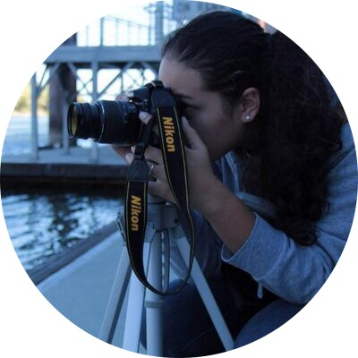

About me
 My Name is Ariel! I was born in the San Francisco Bay Area, but I have been living in the Sacramento Area for over 10 years. I am currently a freelance photographer. I took photography classes in High School and really enjoyed it so I decided to learn more about it in college. After a few years I decided to take it on as a career. I have now been a freelance photographer for 4 years. While it is very rewarding, I have decided to change my career path and work in the web development field.
I have been interested in programming for many years but just did not know where to begin to learn. I took some classes at my local community college, and began to really think this could be my new career path. I am very excited to see where this road leads me!
In my spare time I like to play instruments. I mostly play guitar, but I also play piano, drums, and bass guitar. music is very freeing for me and allows me to be creative. I also enjoy playing video games. I mostly play xbox and playstation games, but I also have a collection of old game consoles. I almost play those games more than the newer ones.
Connect With Me